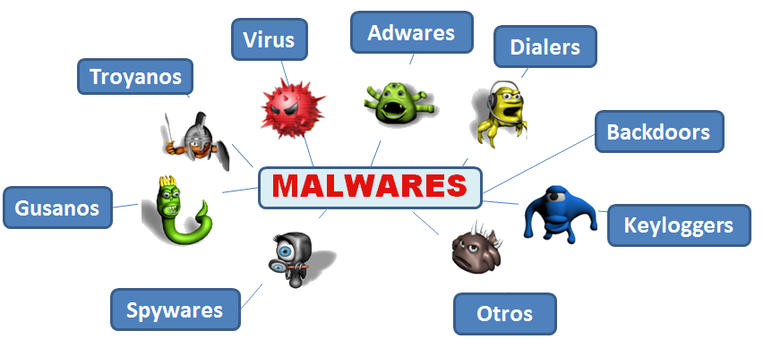

En la lectura 1, identificamos la Introduccion de nuestro OVI. En esta, identificamos tres actores importantes y a los cuales se pueden ver enfocada la Seguridad Informatica. Se eviencio como a cada uno de los Actores, le impacta o afecta en diferente medida, las amenzas latantes y el porque la importancia de aplicar la Seguridad Informatica.
La dinamica de este crucigrama es que aprendas los conceptos de los principales vrus informaticos que existen y a los cuales estamos espuestos como usuarios.